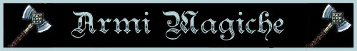

Le armi
magiche possono essere incantate con molteplici incantamenti dalla diversa
potenza. Una prima suddivisione può essere effettuata tra i
poteri magici unici
ed i
poteri magici generali.
I poteri magici unici
sono particolarissimi
poteri che sono stati creati appositamente per una determinata arma e con un
difficilissimo procedimento magico che solo pochissimi utenti di magia conoscono
(in alcuni rari casi la conoscenza del procedimento è andata addirittura
perduta) Esistono numerose armi magiche uniche. La caratteristica di questi
poteri è che gli stessi non possono essere posizionati su qualsiasi arma ma solo
su una particolare arma che risponda a strettissimi requisiti e con un
procedimento magico unico.
I poteri magici generali, invece, sono poteri magici differenziati per scuola di magica che possono essere inseriti attraverso un procedimento magico, più o meno complicato, su ogni arma o su una categoria determinata di armi.
Si tenga presente che, eccezion fatta per gli incantamenti magici della scuola enchantment, un'arma può normalmente essere incantata con un unico potere magico.
Una seconda suddivisione generale di poteri magici può essere effettuata in base alla loro potenza. I poteri magici, quindi possono essere suddivisi in:
|
POTENZA DELL'INCANTAMENTO |
PUNTI ESPERIENZA |
| Minor Enchantment* | da 75 a 375 punti esperienza |
| Lesser Enchantment | da 500 a 999 punti esperienza |
| Superior Enchantment | da 1000 a 1499 punti esperienza |
| Greater Enchantment | da 1500 a 2999 punti esperienza |
| Extraordinary Enchantment | da 3000 punti esperienza in poi |
* si noti che i Minor Enchantment sono incantamenti magici minori per i quali sono applicate specifiche regole non riportate nella relativa sezione (LINK).
TAVOLA PER IL RITROVAMENTO DELLE ARMI MAGICHE
|
COMMON MAGICAL WEAPON |
|
|
TIRO 1d100 |
ARMA RITROVATA |
| 1-7 | Arma Maledetta (7%) |
| 8-50 | Minor Enchantment (43%) |
| 51-70 | (01-65) Incantamento Magico +1 / (66-100) Lesser Enchantment (20%) |
| 71-83 | Incantamento Magico +1 e Minor Enchantment (13%) |
| 84-90 | Incantamento Magico +1 e Lesser Enchantment (7%) |
| 91-92 | Incantamento Magico +1 e Superior Enchantment (2%) |
| 93-97 | (01-65) Incantamento Magico +2 / (66-100) Superior Enchantment (5%) |
| 98-100 | Incantamento Magico +2 e Minor Enchantment (3%) |
|
RARE MAGICAL WEAPON |
|
|
TIRO 1d1000 |
ARMA RITROVATA |
| 1-35 | Arma Maledetta (35) |
| 36-260 | (01-65) Incantamento Magico +1 / (66-100) Lesser Enchantment (225) |
| 261-410 | Incantamento Magico +1 e Minor Enchantment (150) |
| 411-500 | Incantamento Magico +1 e Lesser Enchantment (90) |
| 501-570 | Incantamento Magico +1 e Superior Enchantment (70) |
| 571-615 | Incantamento Magico +1 e Greater Enchantment (45) |
| 616-715 | (01-65) Incantamento Magico +2 / (66-100) Superior Enchantment (100) |
| 716-775 | Incantamento Magico +2 e Minor Enchantment (60) |
| 776-830 | Incantamento Magico +2 e Lesser Enchantment (55) |
| 831-870 | Incantamento Magico +2 e Superior Enchantment (40) |
| 871-895 | Incantamento Magico +2 e Greater Enchantment (25) |
| 896-928 | (01-65) Incantamento Magico +3 / (66-100) Greater Enchantment (33) |
| 929-956 | Incantamento Magico +3 e Minor Enchantment (28) |
| 957-974 | Incantamento Magico +3 e Lesser Enchantment (18) |
| 975-987 | Incantamento Magico +3 e Superior Enchantment (13) |
| 988-995 | Incantamento Magico +3 e Greater Enchantment (8) |
| 996-1000 | Extremely Rare Magical Item (5) |
TAVOLA PER LA SELEZIONE DELL'INCANTAMENTO MAGICO MINORE
Si tiri 1d10: con un risultato da 1 a 6 si tratta di un incantamento avente origine magica, con un risultato da 7 a 10 avrà origine divina.
|
MINOR ENCHANTMENT - ARMI DA CORPO A CORPO - NATURA MAGICA |
||||
|
TIRO |
INCANTAMENTO |
ORIGINE | POTENZA | NOTE |
| 1-9 | Weapon Hardened (9%) | Magica | Least Minor Enchantment (75 xp, 150 gp) | |
| 10-15 | Burning Steel (6%) | Magica | Minor Enchantment (150 xp, 1000 gp) | Armi di acciaio |
| 16-27 | Lesser Slashing/Bashing/Piercing (12%) | Magica | Superior Minor Enchantment (250 xp, 1500 gp) | |
| 28-35 | Minor Slashing/Bashing/Piercing (8%) | Magica | Greater Minor Enchantment (375 xp, 3000 gp) | |
| 36-40 | Lesser Arcanite Poisonous Touch (5%) | Magica | Superior Minor Enchantment (250 xp, 1500 gp) | Armi di Arcanite |
| 41-43 | Minor Arcanite Poisonous Touch (3%) | Magica | Greater Minor Enchantment (375 xp, 3000 gp) | Armi di Arcanite |
| 44-48 | Lesser Undead Vulnerability (5%) | Magica | Superior Minor Enchantment (250 xp, 1500 gp) | Armi di Mithril |
| 49-51 | Minor Undead Vulnerability (3%) | Magica | Greater Minor Enchantment (375 xp, 3000 gp) | Armi di Mithril |
| 52-56 | Lesser Hardness (5%) | Magica | Superior Minor Enchantment (250 xp, 1500 gp) | Armi di Adamantium |
| 57-59 | Minor Hardness (3%) | Magica | Greater Minor Enchantment (375 xp, 3000 gp) | Armi di Adamantium |
| 60-71 | Incantamento Specifico +1 (12%) | Magica | Lesser Minor Enchantment (100 xp, 500 gp) | |
| 72-79 | Incantamento Specifico +2 (8%) | Magica | Minor Enchantment (150 xp, 1000 gp) | |
| 80-84 | Incantamento Specifico +3 (5%) | Magica | Superior Minor Enchantment (250 xp, 2000 gp) | |
| 85-87 | Incantamento Specifico +4 (3%) | Magica | Greater Minor Enchantment (375 xp, 4000 gp) | |
| 88-96 | Incantamento Settoriale +1 (9%) | Magica | Superior Minor Enchantment (250 xp, 2000 gp) | |
| 97-100 | Incantamento Settoriale+2 (4%) | Magica | Greater Minor Enchantment (375 xp, 3500 gp) | |
In caso di origine divina, si tiri 1d10: con un risultato da 7 a 10 l'arma avrà fattezze rituali della divinità corrispondente.
|
MINOR ENCHANTMENT - ARMI DA CORPO A CORPO - NATURA DIVINA |
||||
|
TIRO |
INCANTAMENTO |
ORIGINE | POTENZA | NOTE |
| 1-8 | Blade of Elven Agility | Arlinir | Superior Minor Enchantment (250 xp, 1500 gp) | Short Sword e Long Sword |
| 9-23 [1-60] | Weapon of Salt Conjuration | Eram | Minor Enchantment (150 xp, 1000 gp) | Armi da Taglio e da Punta |
| [61-100] | Lesser Seaweeds of Entanglement | Eram | Superior Minor Enchantment (250 xp, 2000 gp) | |
| 24-39 [1-75] | Lesser Poisonous Weapon | Serpente | Superior Minor Enchantment (250 xp, 1750 gp) | Armi da Taglio e da Punta |
| [76-100] | Superior Poisonous Weapon | Serpente | Greater Minor Enchantment (375 xp, 3500 gp) | Armi da Taglio e da Punta |
| 40-54 [1-50] | Violenza Nanica Inferiore | Srodan | Lesser Minor Enchantment (100 xp, 500 gp) | |
| [51-70] | Violenza Nanica | Srodan | Superior Minor Enchantment (250 xp, 1500 gp) | |
| [71-90] | Combattività della Razza Nanica | Srodan | Superior Minor Enchantment (250 xp, 1500 gp) | |
| [91-100] | Violenza Nanica Superiore | Srodan | Greater Minor Enchantment (375 xp, 3750 gp) | |
| 55-71 [1-45] | Benedizione Sacra Inferiore | Tanatos | Lesser Minor Enchantment (100 xp, 500 gp) | |
| [46-70] | Luce Sacra | Tanatos | Minor Enchantment (150 xp, 1000 gp) | |
| [71-90] | Benedizione Sacra | Tanatos | Superior Minor Enchantment (250 xp, 1500 gp) | |
| [91-100] | Benedizione Sacra Superiore | Tanatos | Greater Minor Enchantment (375 xp, 4000 gp) | |
| 72-90 [1-75] | Least Infernal | Azatar | Superior Minor Enchantment (250 xp, 1750 gp) | Armi di metallo od acciaio |
| [76-100] | Lesser Infernal | Azatar | Greater Minor Enchantment (375 xp, 3750 gp) | Armi di metallo od acciaio |
| 91-95 | Bloodthirsty Weapon | Bazaràk | Greater Minor Enchantment (375 xp, 3750 gp) | |
| 96-100 [1-80] | of Spider Bite | Kalian | Superior Minor Enchantment (250 xp, 1750 gp) | Armi da Taglio e da Punta |
| 96-100 [81-100] | of Spider Bite | Kalian | Superior Minor Enchantment (250 xp, 1750 gp) | Fruste da Guerra |
Il catalogo dei poteri magici generali è suddiviso in due grandi sezioni. La prima sezione riguarda gli incantamenti che possono essere applicati alle armi da lancio e da tiro. La seconda sezione riguarda gli incantamenti che possono essere applicati alle armi da tiro e da fuoco nonché ai relativi proiettili. All'interno del catalogo i poteri magici sono, poi, suddivisi fra incantamenti creati dagli utenti di magia (natura magica) a loro volta suddivisi per scuola di magia di appartenenza e fra incantamenti creati dai sacerdoti (natura clericale) a loro volta suddivisi per divinità di appartenenza